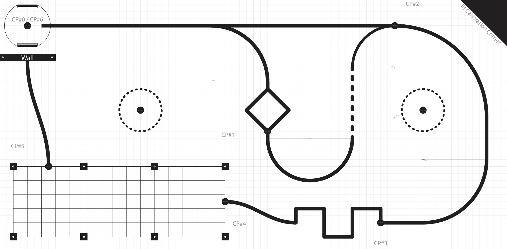
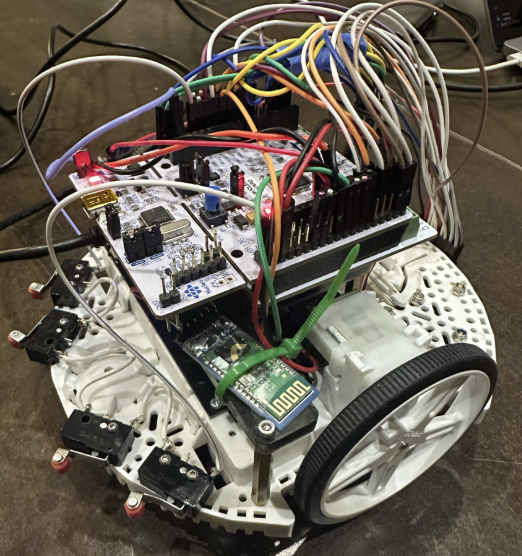

- Generated by
 1.15.0
1.15.0
|
ME 405 Term Project
ROMI obstacle track
|
This documentation describes the software for a Romi robot developed for ME 405. The robot uses:
The goal of the project is make it through an obstacle course designed in order for the use of line sensing and state estimation. Below is the obstacle course we were task to complete.

In order to complete the course we came up with a plan to reach each checkpoint.
CP #0 - 1
Here we follow the line using the line sensor. We do not get distracted by the forked path and we go straight through the diamond.
CP #1 - 2
When we reach checkpoint 1 we immediately start driving in reverse and do a 90 degree CCW turn so that we can follow the forked path that we ignored early. Here we rely on the state estimation in order to know where to turn. From there we line follow all up to the checkpoint. We decided avoid the tight 180 degree turn because it would slow us down.
CP #2 - 3
We just line follow.
CP #3 - 4
We drive straight through this obstacle and find the line at the end to line up.
CP #4 - 5
This obstacle requires you to rely on the state observer since there is no line to follow. We drive straight through and at the end of obstacle do a 90 degree CCW turn. Here is when we drive in reverse to cross the checkpoint.
CP #5 - 6
We drive backwards into the wall. So that our bump sensors detect that we have hit the wall. Then we drive forward and turn 90 degrees 3 times so that we can reach the checkpoint.

The main hardware components are:
The code is organized into two main parts:
Use the navigation panel on the left:
Below is a demo of the Romi completing the course: